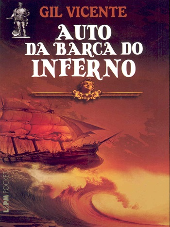
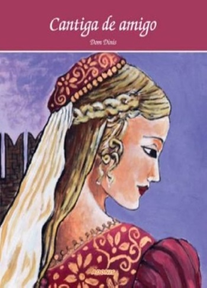
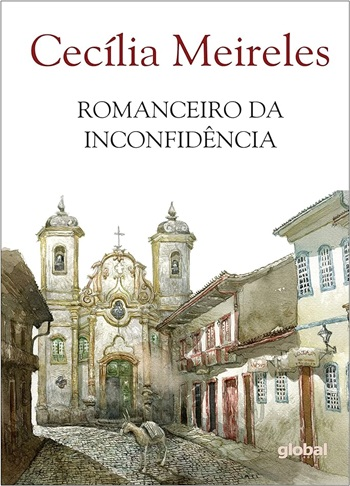
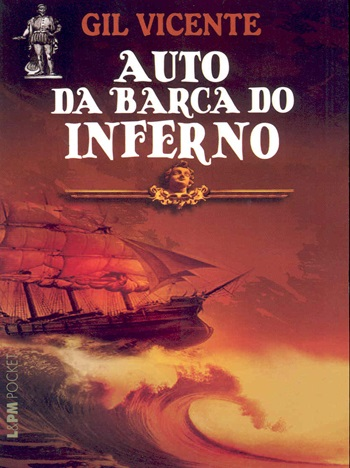
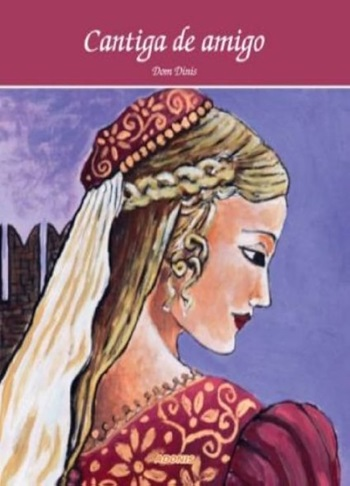
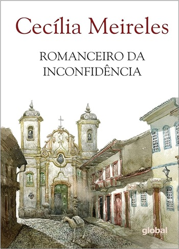

ERA MEDIEVAL

A Era Medieval da literatura portuguesa é dividida entre Primeira Época (trovadorismo) e Segunda Época (humanismo). Ela tem início no início do século XII com a publicação de texto a Canção Ribeirinha, também conhecida como Canção de Guarvaia, de Paio Soares de Taiverós. Essa obra é considerada a mais antiga da literatura portuguesa.
 




